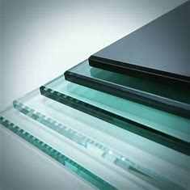
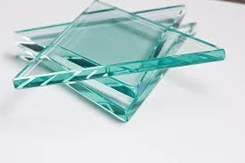

Types of Glass

Tempered Glass
Tempered glass is heat-treated for added strength and safety.
Laminated Glass
Laminated glass consists of two or more layers of glass with a plastic interlayer.
Insulated Glass
Insulated glass units (IGUs) are designed to improve energy efficiency and soundproofing.

Float Glass
Float glass is the basic type of glass used in windows and mirrors.